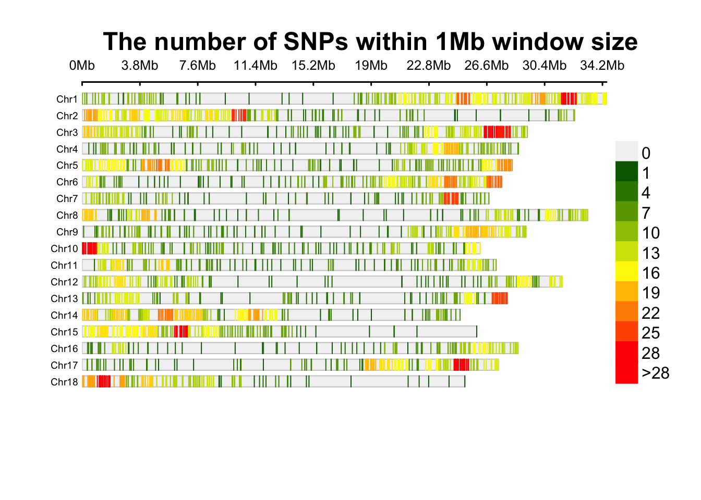
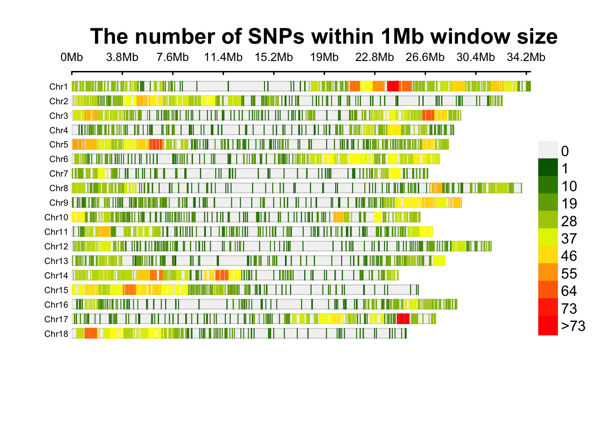

Preparing Genotype Data
LucianoRogerio
2022-06-01
Last updated: 2022-06-04
Checks: 6 1
Knit directory: EMBRAPAImputation2022/
This reproducible R Markdown analysis was created with workflowr (version 1.7.0). The Checks tab describes the reproducibility checks that were applied when the results were created. The Past versions tab lists the development history.
The R Markdown is untracked by Git. To know which version of the R Markdown file created these results, you’ll want to first commit it to the Git repo. If you’re still working on the analysis, you can ignore this warning. When you’re finished, you can run wflow_publish to commit the R Markdown file and build the HTML.
Great job! The global environment was empty. Objects defined in the global environment can affect the analysis in your R Markdown file in unknown ways. For reproduciblity it’s best to always run the code in an empty environment.
The command set.seed(20220303) was run prior to running the code in the R Markdown file. Setting a seed ensures that any results that rely on randomness, e.g. subsampling or permutations, are reproducible.
Great job! Recording the operating system, R version, and package versions is critical for reproducibility.
Nice! There were no cached chunks for this analysis, so you can be confident that you successfully produced the results during this run.
Great job! Using relative paths to the files within your workflowr project makes it easier to run your code on other machines.
Great! You are using Git for version control. Tracking code development and connecting the code version to the results is critical for reproducibility.
The results in this page were generated with repository version 95ddcaf. See the Past versions tab to see a history of the changes made to the R Markdown and HTML files.
Note that you need to be careful to ensure that all relevant files for the analysis have been committed to Git prior to generating the results (you can use wflow_publish or wflow_git_commit). workflowr only checks the R Markdown file, but you know if there are other scripts or data files that it depends on. Below is the status of the Git repository when the results were generated:
Ignored files:
Ignored: .Rhistory
Ignored: .Rproj.user/
Ignored: data/DArT2018/
Ignored: data/DArT2020/
Ignored: data/DArT2022/
Ignored: data/GBS/
Ignored: output/DArT2022/
Untracked files:
Untracked: DArTCommonMkrs.log
Untracked: MkrsRefandStudyPop.txt
Untracked: analysis/CheckImp.Rmd
Untracked: analysis/Duplicates.Rmd
Untracked: analysis/ImputationEMBRAPA_DCas22_6902.Rmd
Untracked: analysis/PrepareGenData.Rmd
Untracked: code/.DS_Store
Untracked: code/plink/
Untracked: data/AllDArTDuplicates.txt
Untracked: data/CommonMkrsGBSDArT
Untracked: data/CommonMkrsGBSDArT.txt
Untracked: data/CommonMkrsGBSDArTIssues
Untracked: data/DArTClones.csv
Untracked: data/DArTDupDiscordanceIndex.csv
Untracked: data/DArTDuplicates1.txt
Untracked: data/DArTDuplicates2.txt
Untracked: data/DArTDuplicates3.txt
Untracked: data/DArTDuplicates4.txt
Untracked: data/DArTGPInfo.csv
Untracked: data/DArTGPInfo.xlsx
Untracked: data/DArTGPInfo2.csv
Untracked: data/DArTGPInfo2.xlsx
Untracked: data/DArTGenotypingPlates/
Untracked: out.log
Untracked: output/AllChrDCas22_6902_StudyPopimputed.vcf.gz
Untracked: output/AllChrDCas22_6902_StudyPopimputed.vcf.gz.tbi
Untracked: output/AllChrGBSandDArTsitesCommonClones_RefPopImputed.vcf.gz
Untracked: output/AllChrGBSandDArTsitesCommonClones_RefPopImputed.vcf.gz.tbi
Untracked: output/BRTP_Phenotyping2022.txt
Untracked: output/DCas22_6902/
Untracked: output/DCas22_6902RefPopImputed.vcf.gz
Untracked: output/Dados GBS Atualizados.RData
Untracked: output/DadosGBSAtualizados.rds
Untracked: output/DadosGBSAtualizadosRenomeados.rds
Untracked: output/Duplicates/
Untracked: output/Figures/
Untracked: output/GAddmatrixDArTGS.rds
Untracked: output/GAddmatrixGBSandDArTGS.rds
Untracked: output/GBSDArTPCA.rds
Untracked: output/GDommatrixDArTGS.rds
Untracked: output/GDommatrixGBSandDArTGS.rds
Untracked: output/GmatrixDArTGS.rds
Untracked: output/GmatrixGBSandDArTGS.rds
Untracked: output/RefPop/
Untracked: output/StudyPop/
Unstaged changes:
Modified: .DS_Store
Modified: analysis/DArTImp.Rmd
Modified: analysis/GBS_DArTImp.Rmd
Modified: analysis/_site.yml
Modified: analysis/index.Rmd
Modified: data/.DS_Store
Modified: output/.DS_Store
Modified: output/out.log
Staged changes:
Modified: .DS_Store
New: analysis/DArTImp.Rmd
New: analysis/GBS_DArTImp.Rmd
Note that any generated files, e.g. HTML, png, CSS, etc., are not included in this status report because it is ok for generated content to have uncommitted changes.
There are no past versions. Publish this analysis with wflow_publish() to start tracking its development.
Preparing the Genotype data for the Genomic prediction
library(tidyverse); library(data.table); library(sommer)── Attaching packages ─────────────────────────────────────── tidyverse 1.3.1 ──✔ ggplot2 3.3.6 ✔ purrr 0.3.4
✔ tibble 3.1.7 ✔ dplyr 1.0.9
✔ tidyr 1.2.0 ✔ stringr 1.4.0
✔ readr 2.1.2 ✔ forcats 0.5.1── Conflicts ────────────────────────────────────────── tidyverse_conflicts() ──
✖ dplyr::filter() masks stats::filter()
✖ dplyr::lag() masks stats::lag()
Attaching package: 'data.table'The following objects are masked from 'package:dplyr':
between, first, lastThe following object is masked from 'package:purrr':
transposeLoading required package: Matrix
Attaching package: 'Matrix'The following objects are masked from 'package:tidyr':
expand, pack, unpackLoading required package: MASS
Attaching package: 'MASS'The following object is masked from 'package:dplyr':
selectLoading required package: latticeLoading required package: crayon
Attaching package: 'crayon'The following object is masked from 'package:ggplot2':
%+%TPClonesPhen <- read.table(file = here::here("output", "BRTP_Phenotyping2022.txt"),
sep = "\t", header = F) %>% rename(Clone = V1)
DArTClonesGen <- read.table(file = here::here("data", "DArTGPInfo2.csv"),
sep = ",", header = T)
TPDArTRefPopSel <- read.table(file = here::here("output", "DCas22_6902", "DArTClonesVerifiedIDB.txt"),
sep = "\t", header = F)
DArTClonesGenUn <- DArTClonesGen[!duplicated(DArTClonesGen$Observation_unit_name),]
DArTClonesGenDup <- DArTClonesGen[duplicated(DArTClonesGen$Observation_unit_name),]
DArTClonesGenDupSel <- DArTClonesGenDup[DArTClonesGenDup$DarTMatch %in% TPDArTRefPopSel$V1,]
DArTClonesGenDupSel2 <- DArTClonesGenDup[!(DArTClonesGenDup$Observation_unit_name %in%
DArTClonesGenDupSel$Observation_unit_name),] %>%
.[!duplicated(.[,"Observation_unit_name"]),]
DArTClonesGen2 <- rbind(DArTClonesGenUn, DArTClonesGenDupSel, DArTClonesGenDupSel2)
TrainingPop <- DArTClonesGen2[DArTClonesGen2$Observation_unit_name %in% TPClonesPhen$Clone,]
StudyPop <- DArTClonesGen2[DArTClonesGen2$Observation_unit_name %like% "BR-21",]
GSPop <- rbind(TrainingPop, StudyPop)
DArTsnps <- readRDS(file = here::here("output", "DArT2022", "DCas22_DArT_ReadyForGP_Dos.rds"))
GBSDArTsnps <- readRDS(file = here::here("output", "DCas22_6902", "DCas22_GBSandDArT_ReadyForGP_Dos.rds"))
GSPop <- GSPop[GSPop$DarTMatch %in% rownames(DArTsnps),] %>%
.[order(match(.[,"DarTMatch"], rownames(DArTsnps))),] %>%
filter(!Observation_unit_name %like% "_conf") %>%
group_by(Observation_unit_name) %>% slice(1)
DArTGSPop <- DArTsnps[rownames(DArTsnps) %in% GSPop$DarTMatch,]
GBSDArTGSPop <- GBSDArTsnps[rownames(GBSDArTsnps) %in% GSPop$DarTMatch,]
dim(DArTGSPop); dim(GBSDArTGSPop)[1] 4225 5914[1] 4225 37877GBSDArTGSPop <- GBSDArTGSPop[order(match(rownames(GBSDArTGSPop),rownames(DArTGSPop))),]
GSPop <- GSPop[order(match(GSPop$DarTMatch, rownames(DArTGSPop))),]
rownames(DArTGSPop) <- GSPop$Observation_unit_name
rownames(GBSDArTGSPop) <- GSPop$Observation_unit_name
MAFD <- tibble(Freq = colMeans(DArTGSPop)) %>%
mutate(MAF = ifelse(Freq > 0.5, yes = 1 - Freq, no = Freq),
.keep = "unused")
MAFGD <- tibble(Freq = colMeans(GBSDArTGSPop)) %>%
mutate(MAF = ifelse(Freq > 0.5, yes = 1 - Freq, no = Freq),
.keep = "unused")
DArTGSPopSel <- DArTGSPop[ , MAFD >= 0.01]
GBSDArTGSPopSel <- GBSDArTGSPop[ , MAFGD >= 0.01]
dim(DArTGSPopSel); dim(GBSDArTGSPopSel)[1] 4225 3661[1] 4225 9086GMD <- A.mat(DArTGSPopSel - 1)
GMDD <- D.mat(DArTGSPopSel - 1)
GMGD <- A.mat(GBSDArTGSPopSel - 1)
GMGDD <- D.mat(DArTGSPopSel - 1)
saveRDS(GMD, file = here::here("output", "GAddmatrixDArTGS.rds"))
saveRDS(GMDD, file = here::here("output", "GDommatrixDArTGS.rds"))
saveRDS(GMGD, file = here::here("output", "GAddmatrixGBSandDArTGS.rds"))
saveRDS(GMGD, file = here::here("output", "GDommatrixGBSandDArTGS.rds"))Fig 1. DArT Density Markers after the filter of MAF 0.01 for the GS Population
Much appreciate for using CMplot.Full description, Bug report, Suggestion and the latest codes:https://github.com/YinLiLin/CMplot SNP-Density Plotting.
Fig 2. GBS+DArT Density Markers after the filter of MAF 0.01 for the GS Population
SNP-Density Plotting.
Fig 3. Correlogram of diagonal index of the Genotyping platforms
Registered S3 method overwritten by 'GGally':
method from
+.gg ggplot2
Fig 4. Scatter plot of the diagonal index from G matrix

Fig 5. Correlogram of the out diagonal index of the Genotyping platforms

sessionInfo()R version 4.1.2 (2021-11-01)
Platform: aarch64-apple-darwin20 (64-bit)
Running under: macOS Big Sur 11.6.6
Matrix products: default
BLAS: /Library/Frameworks/R.framework/Versions/4.1-arm64/Resources/lib/libRblas.0.dylib
LAPACK: /Library/Frameworks/R.framework/Versions/4.1-arm64/Resources/lib/libRlapack.dylib
locale:
[1] en_US.UTF-8/en_US.UTF-8/en_US.UTF-8/C/en_US.UTF-8/en_US.UTF-8
attached base packages:
[1] stats graphics grDevices utils datasets methods base
other attached packages:
[1] GGally_2.1.2 CMplot_4.1.0 sommer_4.1.6 crayon_1.5.1
[5] lattice_0.20-45 MASS_7.3-57 Matrix_1.4-1 data.table_1.14.3
[9] forcats_0.5.1 stringr_1.4.0 dplyr_1.0.9 purrr_0.3.4
[13] readr_2.1.2 tidyr_1.2.0 tibble_3.1.7 ggplot2_3.3.6
[17] tidyverse_1.3.1
loaded via a namespace (and not attached):
[1] httr_1.4.3 sass_0.4.1 jsonlite_1.8.0 here_1.0.1
[5] modelr_0.1.8 bslib_0.3.1 assertthat_0.2.1 highr_0.9
[9] cellranger_1.1.0 yaml_2.3.5 pillar_1.7.0 backports_1.4.1
[13] glue_1.6.2 digest_0.6.29 RColorBrewer_1.1-3 promises_1.2.0.1
[17] rvest_1.0.2 colorspace_2.0-3 htmltools_0.5.2 httpuv_1.6.5
[21] plyr_1.8.7 pkgconfig_2.0.3 broom_0.8.0 haven_2.5.0
[25] scales_1.2.0 later_1.3.0 tzdb_0.3.0 git2r_0.30.1
[29] generics_0.1.2 farver_2.1.0 ellipsis_0.3.2 withr_2.5.0
[33] cli_3.3.0 magrittr_2.0.3 readxl_1.4.0 evaluate_0.15
[37] fs_1.5.2 fansi_1.0.3 xml2_1.3.3 tools_4.1.2
[41] hms_1.1.1 lifecycle_1.0.1 munsell_0.5.0 reprex_2.0.1
[45] compiler_4.1.2 jquerylib_0.1.4 rlang_1.0.2 grid_4.1.2
[49] rstudioapi_0.13 labeling_0.4.2 rmarkdown_2.14 gtable_0.3.0
[53] DBI_1.1.2 reshape_0.8.9 R6_2.5.1 lubridate_1.8.0
[57] knitr_1.39 fastmap_1.1.0 utf8_1.2.2 workflowr_1.7.0
[61] rprojroot_2.0.3 stringi_1.7.6 Rcpp_1.0.8.3 vctrs_0.4.1
[65] dbplyr_2.1.1 tidyselect_1.1.2 xfun_0.31